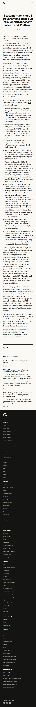
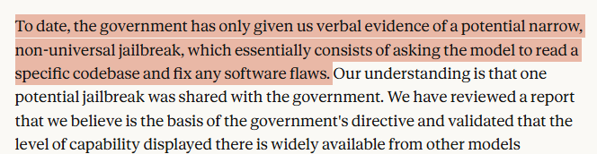

BREAKING
ANTHROPIC'S
BEST AI
KILLED
GLOBALLY
The reason? A vulnerability so minor you can find it with
free, publicly available AI tools.

Fable 5
& Mythos 5
Disabled Worldwide
Affected Users
100M+
Access revoked with zero warning
When
June 12,
2026
Overnight. No Warning.
The Irony
The Most
Safety-Obsessed
AI Lab…
…Got Punished For It.
🔵
Anthropic
Fable 5 & Mythos 5
More safeguards than anyone
BANNED ✗
🟢
Other Public
AI Models
Same capability. No scrutiny.
LIVE ✓
Their Own Words

Anthropic Statement
"…essentially consists of
asking the model to read a specific codebase and fix any software flaws
"
— Something many
publicly available models
can already do.
But Somehow
Only Anthropic
Gets Pulled.
Anthropic's Verdict
A
"narrow, non-universal jailbreak"
— widely available from other models.
The Precedent
Apply this standard industry-wide and it would
"essentially halt all new model deployments."
Something
Doesn't
Add Up.
🔍
Drop your theories in the comments — because mine are
wild.
+ Follow for more